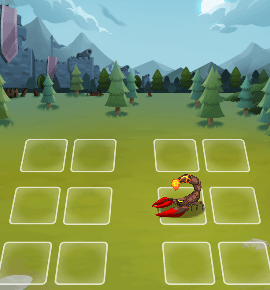
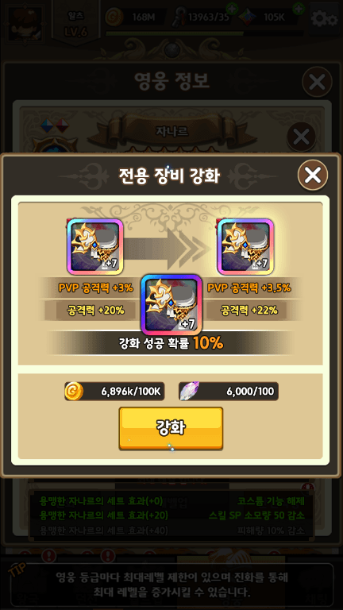

용사단 키우기
Spine 전투 애니메이션과 이펙트


프로젝트 소개
캐릭터 스킬의 준비 동작, 발동과 착탄이 전투 화면에서 이어지는 작업을 정리했습니다.
담당 업무
- 스콜피온 인게임 원화 디자인·애니메이션·이펙트
- 별도 샘플의 UI 성공 연출
기여 범위 및 사용 리소스
- 작업 항목은 해당 게시물 제목에 근거. 리깅·파츠별 제작 분담과 UI 원화 출처는 미확인.
기술 및 툴
Gallery
스킬 동작과 적용 결과
스콜피온의 애니메이션, 단독 효과, 인게임 적용 순서로 비교할 수 있습니다.


UI 성공 피드백
프레임 정렬에서 성공 플래시로 전환되는 짧은 UI 연출입니다.

